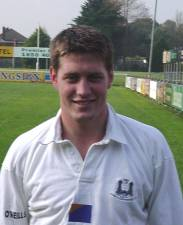

Name
Ronan O'Gara
Position Out Half
Date Of Birth 07/03/77
Occupation Professional Rugby Player
Honours Lions Tour to Australia 2001,
Irish International,
Ireland "A",
Ireland U21,
Munster Interprovincial,
AIL 1998-99,
Captained winning teams for PBC in Senior and Junior Cups.
